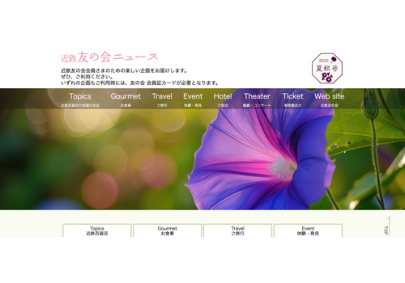
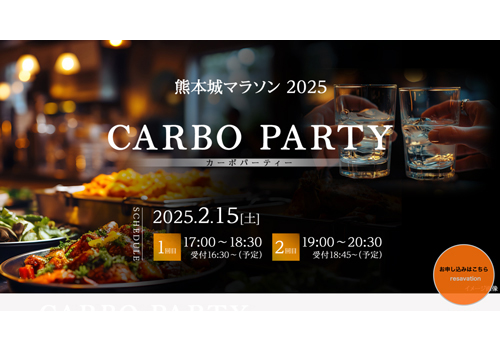

阪急阪神マーケティングソリューションズ株式会社 採用ご担当社 様
このたびは、貴重な機会をいただき誠にありがとうございます。
以下に、私の制作実績とスキルセットについてご紹介いたします。
どうぞよろしくお願いいたします。
画像または青字タイトルクリックでWebサイトへ移動します。
近鉄友の会ニュース 2025年夏秋号
制作箇所サイトデザイン、ロゴデザイン、コーディング
skillhtml css jQuery illustorator
photoshop
Webサイト初号である2023年春号から2025年夏秋号まで制作を行いました。紙で発行されていた頃のレイアウトや、全体的な色味のイメージを損なわないようにデザインしました。また、レスポンシブ対応にもこだわりました。
CARBO PARTYのご案内
制作箇所メインビジュアル、ページデザイン、コーディング
skillhtml css
photoshop
メインビジュアルは、Illustoratorを使ってデザインしました。クライアントの要望により、現代的で大人っぽいイメージとなるように配慮して制作しました。
廃校を活用した 避難生活疑似体験プログラム
制作箇所デザイン（メイン画像等作成を除く）、コーディング
skillhtml css
photoshop
チラシを元にWebサイトを作成しました。ポップなイメージを取り入れながらも、規則性が感じられるように気をつけて制作しました。色味を多用するため、彩度や明度のバランスを配慮しました。
バリアフリー情報
制作箇所デザイン、コーディング
キーワード検索ができるサイトの要望があり考えたサイトです。
skillhtml css javascript jQuery
photoshop
javascriptで情報を管理し、jQueryで絞り込みとワード検索ができるサイトを作りました。カテゴリー毎に色分けし、形式はカード式にすることで、スッキリとした印象を持たせました。カード式は見やすさの他、レスポンシブ対応の点でも有用です。
株式会社KBC
skillhtml css javascript jQuery photoshop illustrator
株式会社近畿日本ツーリスト商事
skillhtml css jQuery photoshop
Amazing Hokkaido
skillhtml css jQuery photoshop illustrator
株式会社近畿日本ツーリストブループラネット
skillhtml css javascript photoshop